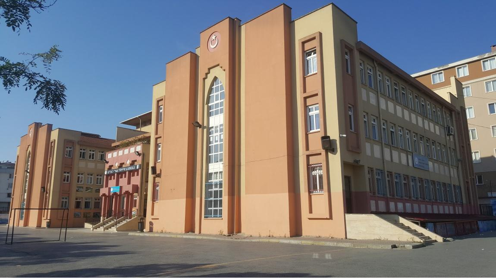
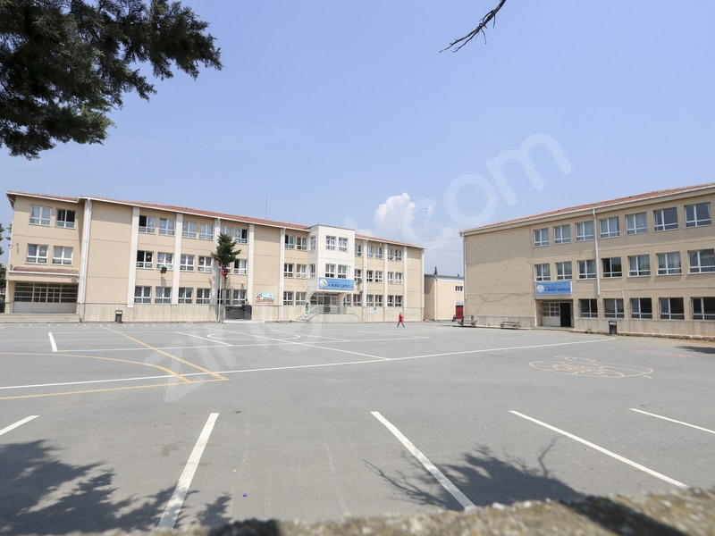

Sakarya Üniversitesi (2023 - )

Sakarya Üniversitesi, Türkiye'nin Sakarya ilinde bulunan köklü bir üniversitedir. 2023 yılından itibaren burada Bilgisayar Mühendisliği bölümünde öğrenimime devam ediyorum. Üniversite, geniş kampüsü, çeşitli fakülteleri ve modern eğitim olanakları ile dikkat çekmektedir.
Ayrıca, öğrenci kulüpleri ve sosyal etkinlikler sayesinde akademik gelişimimin yanı sıra sosyal becerilerimi de geliştirme fırsatı buluyorum. Bilgisayar Mühendisliği bölümü, ileri düzeyde teorik bilgi ve uygulamalı projeler sunarak kariyerime sağlam bir temel oluşturuyor.
İzmir Yüksek Teknoloji Enstitüsü (2021 - 2023)

İzmir Yüksek Teknoloji Enstitüsü (İYTE), Türkiye'nin saygın teknik üniversitelerinden biridir. Burada geçirdiğim iki yıl boyunca Bilgisayar Mühendisliği alanında derinlemesine bilgi edindim.
Ayrıca, İzmir'in güzel atmosferi ve kampüsün doğayla iç içe olması, eğitim hayatımı daha keyifli hale getirdi. İYTE'deki eğitimim, mühendislik alanında sağlam bir altyapı oluşturmama yardımcı oldu.
Akdeniz Üniversitesi (2019 - 2021)

Akdeniz Üniversitesi, Antalya'da bulunan ve geniş bir öğrenci kitlesine hitap eden bir üniversitedir. Burada Bilgisayar Programcılığı alanında aldığım eğitim, akademik gelişimime önemli katkılar sağladı.
Üniversitenin çeşitli sosyal ve kültürel etkinlikleri, hem kişisel hem de profesyonel olarak gelişimime yardımcı oldu. Akdeniz Üniversitesi'nde geçirdiğim yıllar, programlama becerilerimi geliştirirken aynı zamanda üniversite hayatının ne kadar zengin ve çok yönlü olabileceğini bana gösterdi.
Çakmaklı Cumhuriyet Anadolu Lisesi (2015 - 2019)

Büyükçekmece Çakmaklı Cumhuriyet Anadolu Lisesi, İstanbul'un Büyükçekmece ilçesinde yer almaktadır. Lise eğitimi aldığım bu dönemde, akademik temellerimi sağlamlaştırdım ve üniversiteye hazırlık sürecinde önemli adımlar attım.
Okulun öğretmen kadrosu ve eğitim programları, beni üniversite hayatına hazırlamada büyük rol oynadı. Aynı zamanda, sosyal etkinlikler ve kulüpler sayesinde farklı alanlarda da kendimi geliştirme fırsatı buldum.
Osman Nuri Bakırcı Ortaokulu (2014 - 2015)

Esenyurt Osman Nuri Bakırcı Ortaokulu, İstanbul'un Esenyurt ilçesinde bulunan bir ortaokuldur. Ortaokul son sınıfımı burada tamamladım ve liseye geçiş sınavına hazırlandım. Okulun öğretmenleri ve eğitim kalitesi, akademik başarıma önemli katkılar sağladı.
Kıraç Limak Türker İ.O. (2008 - 2014)
Esenyurt Kıraç Limak Türker İlköğretim Okulu, İstanbul'da yer alan bir ilköğretim okuludur. İlkokul yıllarımın büyük bir kısmını burada geçirdim ve temel eğitimimi burada aldım. Okulun disiplinli ve nitelikli eğitim kadrosu, benim eğitim hayatımın sağlam temellerini oluşturdu.
Sultan Murat İlköğretim Okulu (2006 - 2008)
Eğitim hayatıma başladığım okul olan Sefaköy Sultan Murat İlköğretim Okulu, İstanbul'da yer almaktadır. İlk iki yılımı burada geçirdim ve eğitim hayatımın temellerini burada attım. Okulun sıcak atmosferi ve öğretmenlerin destekleyici yaklaşımı, öğrenim sürecimi keyifli hale getirdi.